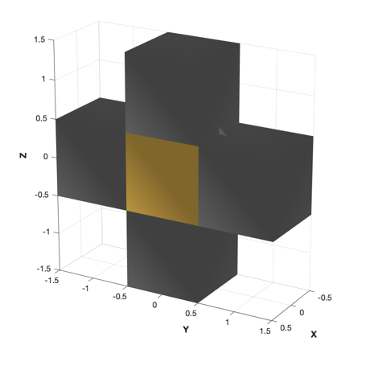
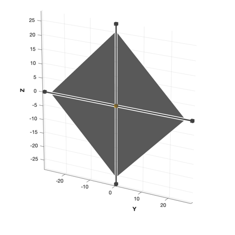
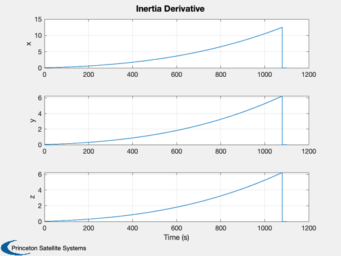
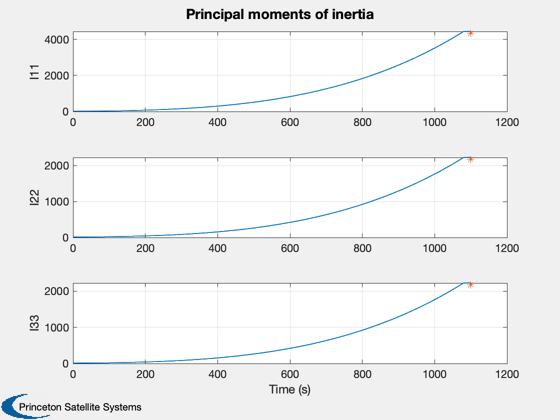
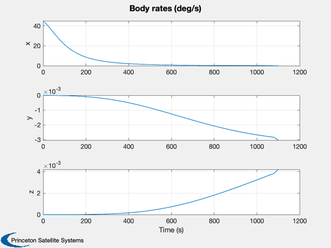
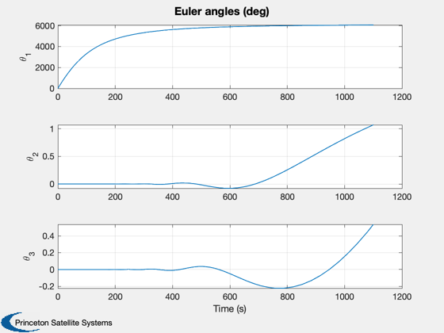
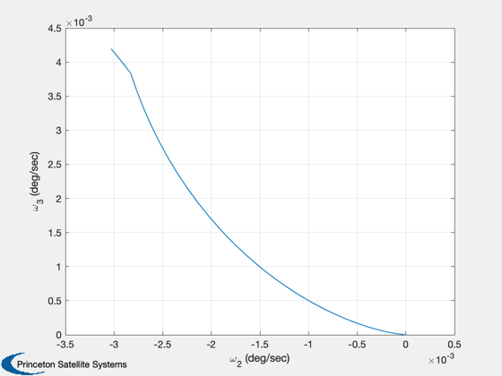
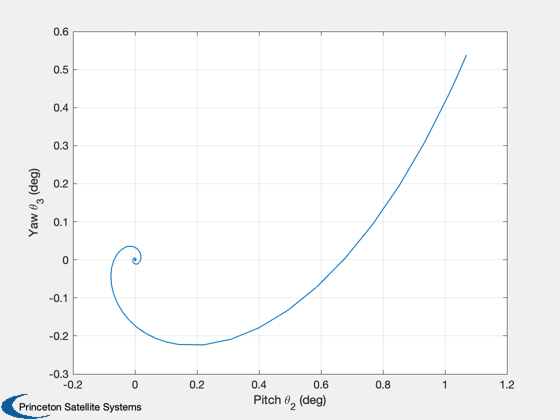
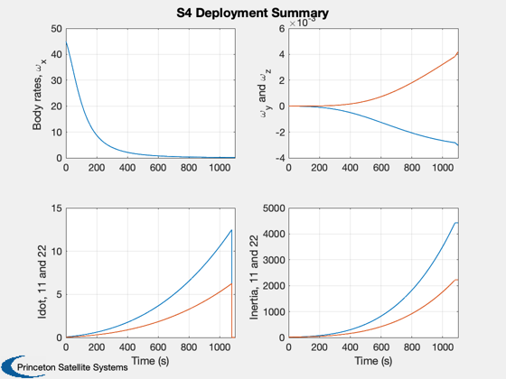

S4 (ATK's scalable sail) deployment demo.
Notes:
Unable to replicate steepness of curve in roll rate plots.
Otherwise behavior of plots similar for full RHS and simplified version
from paper.
Functions demonstrated:
S4Deploy, CAD model
IDotS4, inertia derivative function
FTimeVaryingI, attitude dynamics
S4DeployTorque, disturbance model
Since version 7.
------------------------------------------------------------------------
Reference: LeFevre and Jha, (Student Paper) Attitude Dynamics and Stability
of Solar Sails During Deployment. AIAA-2006-1704
------------------------------------------------------------------------
See also DrawSCPlanPlugIn, Q2Eul, QZero, InformDlg, Plot2D, Rename,
FTimeVaryingI, FS4Deployment, FSailCombined, IDotS4, S4DeployTorque
------------------------------------------------------------------------
Contents
clear force; clear torque; clear d;
model = 'full';
d = FSailCombined;
Load and draw the model
d.g = load('S4PreDeploy.mat');
g2 = load('S4Deployed.mat');
DrawSCPlanPlugIn( 'initialize', d.g );
view(120,20)
drawnow
Rename('Pre-Deployment Model')
DrawSCPlanPlugIn( 'initialize', g2 );
view(120,20)
drawnow
Rename('Deployed Model')
 
Deployment data
d.Ldot = 0.025;
d.fInertia = @IDotS4;
Apply a fixed torque for cp/cm offset
eps = 0.1;
d.F = 0.01;
Tz = eps*d.F;
Set tolerances
xODEOptions = odeset( 'AbsTol', 1e-8, 'RelTol', 1e-5 );
Assemble the state vector. Inertia is last.
x0 = [zeros(6,1);QZero;[45*pi/180;0;0];reshape(d.g.mass.inertia,9,1)];
Propagator
force.total = [d.F;0;0];
torque.total = [0;0;Tz];
hDlg = InformDlg( 'Integrating...', 'S4Deployment' );
switch model
case 'full'
d.ephemeris = 'NoEphemeris';
d.disturbance = @S4DeployTorque;
d.attitude = @FTimeVaryingI;
d.environment = 'NoEnvironment';
d.orbit = 'NoOrbit';
[z, x] = ode113( @FSailCombined, [0 1100], x0, xODEOptions, [], d );
case 'student'
[z, x] = ode113( @FS4Deployment, [0 1100], x0, xODEOptions, force, torque, d );
end
close(hDlg);
x = x';
t = z';
nSim = length(t);
Obtain Idot post-integration
Idot = IDotS4( t, d );
Plot inertia
Plot2D(t,Idot,'Time (s)',{'x','y','z'},'Inertia Derivative')
I = x([14 18 22],:);
Plot2D(t,I,'Time (s)',{'I11','I22','I33'},'Principal moments of inertia')
subplot(3,1,1)
hold on; plot(t(end),g2.mass.inertia(1,1),'*');
subplot(3,1,2)
hold on; plot(t(end),g2.mass.inertia(2,2),'*');
subplot(3,1,3)
hold on; plot(t(end),g2.mass.inertia(3,3),'*');
 
Plot rates and angles
w = x(11:13,:)*180/pi;
Plot2D(t,w,'Time (s)',{'x','y','z'},'Body rates (deg/s)')
eul = zeros(3,nSim);
for k = 1:nSim
eul(:,k) = Q2Eul(x(7:10,k));
end
eul(1,:) = unwrap(eul(1,:));
eul = eul*180/pi;
Plot2D(t,eul,'Time (s)',{'\theta_1','\theta_2','\theta_3'},'Euler angles (deg)')
Plot2D(w(2,:),w(3,:),'\omega_2 (deg/sec)','\omega_3 (deg/sec)',' ')
Plot2D(eul(2,:),eul(3,:),'Pitch \theta_2 (deg)','Yaw \theta_3 (deg)',' ')
Plot2D(t,[w;Idot(1:2,:);I(1:2,:)],'Time (s)',{'Body rates, \omega_x','\omega_y and \omega_z',...
'Idot, 11 and 22','Inertia, 11 and 22'},...
'S4 Deployment Summary',[],{1, [2 3],[4 5],[6 7]},[],2)
    